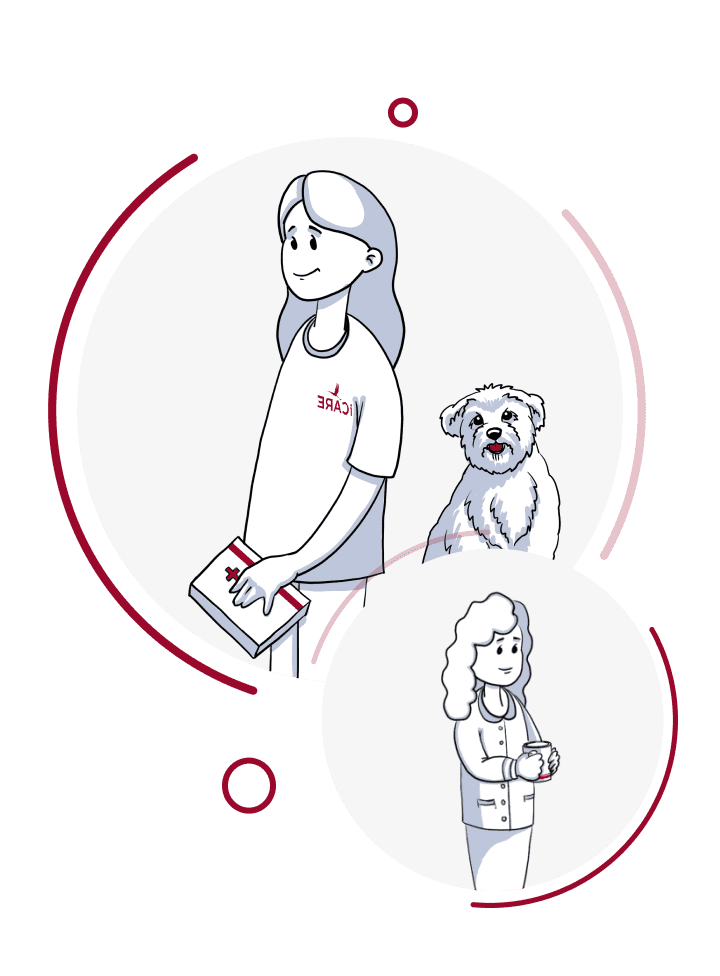
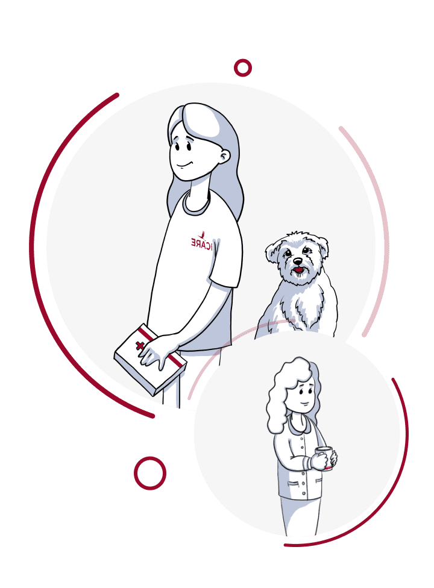

Programul iCare este o manifestare a îngrijirii pentru refugiați. Dacă nu sunteți indiferent și doriți să îi ajutați pe cei care au nevoie în mod special astăzi, vă invităm să cooperați.
Poate că te vei inspira din exemplul lui Dmytro din Kiev, care a aflat recent că în această toamnă și iarnă mulți oameni vor primi sobe de înaltă calitate în cadrul programului iCare. Dmytro a aflat de la noi prețul de cost al unei astfel de sobe și s-a oferit să plătească pentru producția acesteia. După numai două săptămâni, am instalat o sobă în regiunea Harkov, într-o casă în care sistemul de încălzire a fost distrus.
Vă vom accepta cu plăcere ajutorul financiar, rugăciunea și ajutor voluntar.
Contactați-ne folosind opțiunea de feedback de pe site, împărtășiți cu ce sunteți gata să ajutați și vă vom accepta cu cu recunoștință și mulțumire în fața lui Dumnezeu.
 Conecteaza-te cu noi
Conecteaza-te cu noi


 
